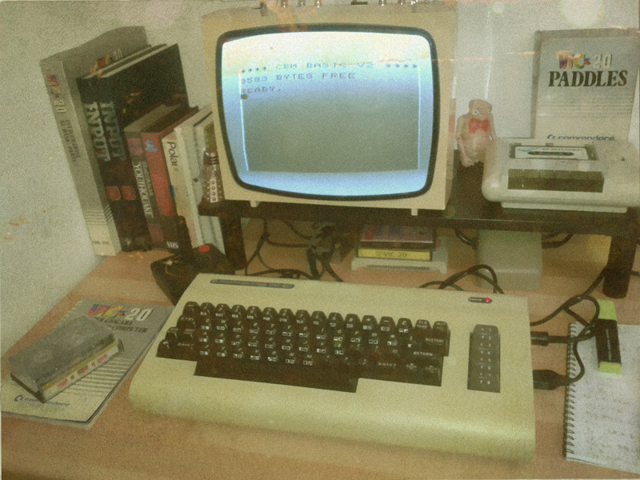

thiS iS prObaBLy My OLdest CompuTER rELAtEd pHOtO, cirCA 1982. iT wAS BuRiEd UNdeR a piLe of oLD MAGS at My mOthER’s PLaCe.
sO tHAnkS to everYbodY wHO rEbLogGed MY APRiL FooL!!! THiS PiCTuRe wAS TAken JUsT a wEEK aGO, EVErYTHing WaS SEt Up juST fOr THE sHoOT ANd it has bEEn OLdNEneD WitH PhOtoSHoP :)